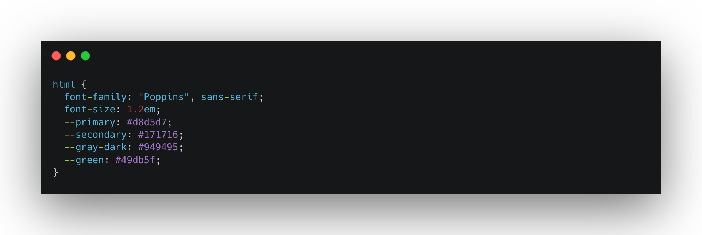
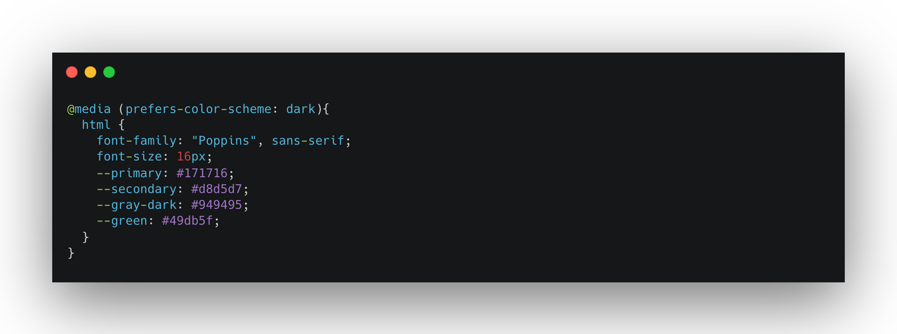
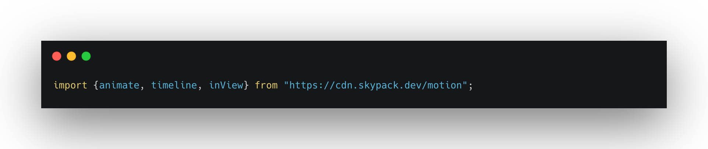

COLORS & ANIMATIONS
Process
I began by creating a color palette with Huemint.

Dark Mode
Afterwards, I set a media query based on the preferred color scheme, in this case dark. If the user's operating system is set to light mode, the website will appear in light mode. The same will happen if it's set in dark mode.

Animations
Finally, I connected Motion One with my script and imported animate, timeline, and inView.
